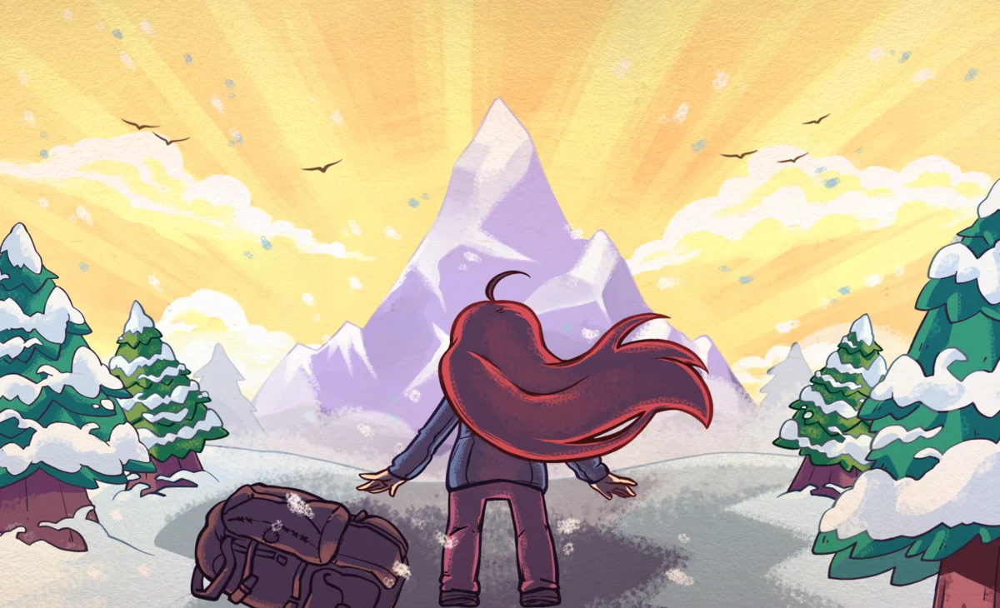

Na fase The Summit de Celeste, Madeline finalmente realiza a última parte de sua escalada rumo ao topo da Montanha Celeste. Durante a subida, ela relembra momentos importantes de sua jornada e percebe o quanto mudou desde o início da aventura, especialmente após aprender a lidar melhor com seus medos e emoções.

Ao alcançar o cume, Madeline consegue completar seu objetivo e encontra Theo novamente para apreciar a vista da montanha. O capítulo representa a conclusão de seu processo de autoconhecimento e superação pessoal, mostrando que sua maior conquista não foi apenas chegar ao topo, mas crescer emocionalmente ao longo do caminho.